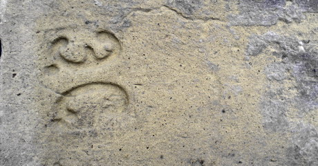

Завод Ейсмана
Либідська площаОдин з провідних київських заводів. У 1848 році випустив 1,5 млн цеглин. З цегли заводу побудовані Червоний корпус, Перша та Друга Київські гімназії, Кадетський корпус (тепер Міністерство оборони).
Цікаві відомості